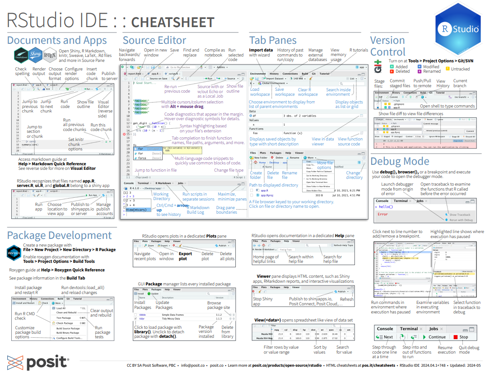
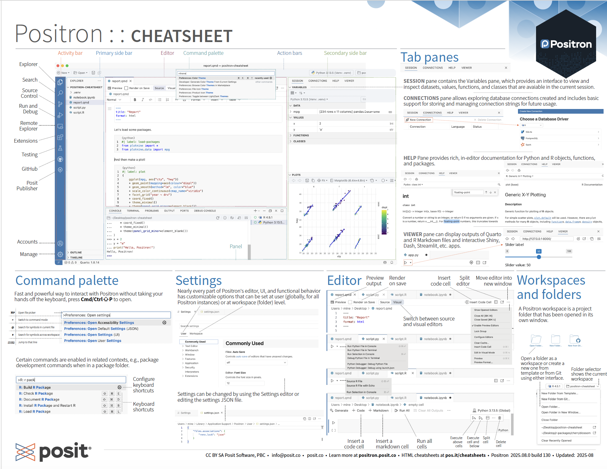
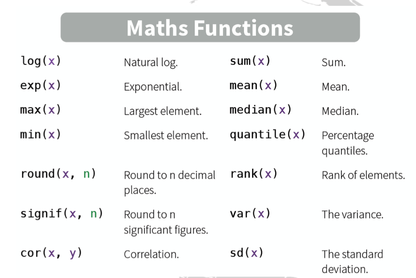
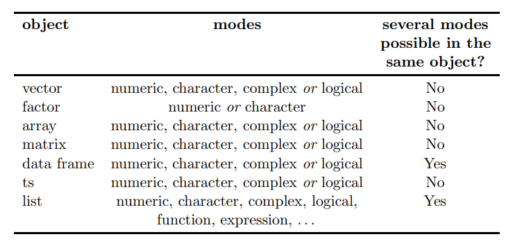
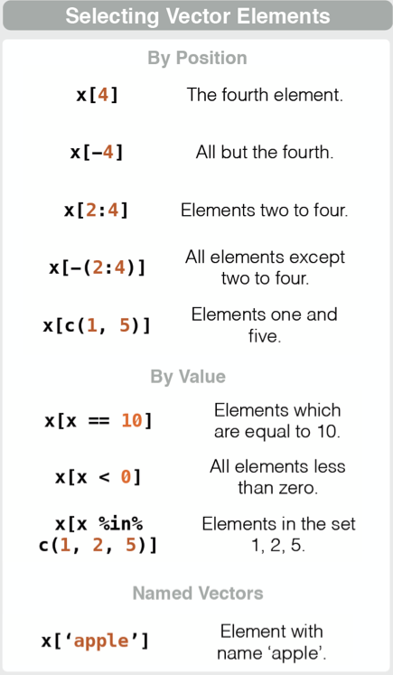
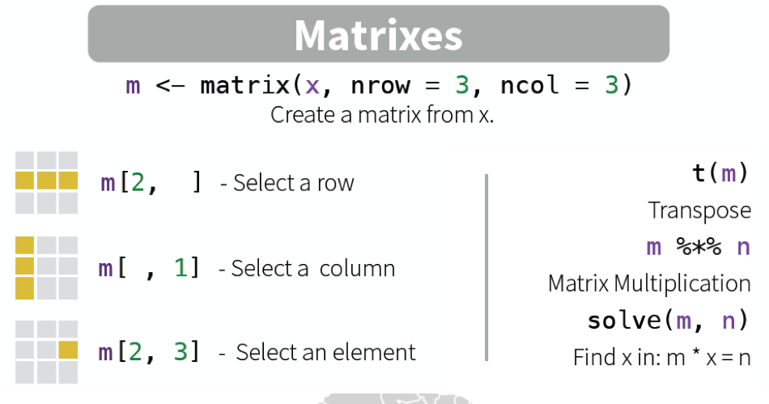
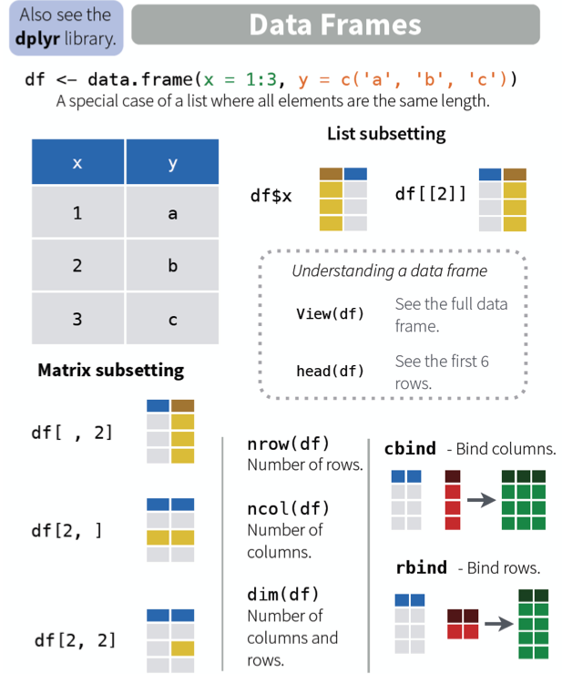
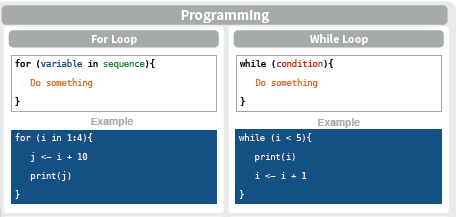
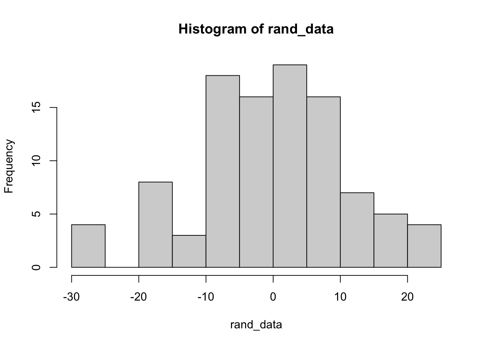

getwd()
setwd("C:/Users/YourName/YourFolder") # This sets the working directory (where R looks for files)
getwd() # Double check your working directory LGEO2185: Introduction To R
Today’s program
- R syntax (self-study)
- Basic R controls
- Fun with R functions
- Assignment
Today’s Learning Objectives
- Knowing what R is & what you can do with it
- Getting comfortable with functions
- Learn the basics of working with R
This first session is giving you basics of R, if you’re comfortable with the software, you can go directly to the assignments.
We will be using RStudio (IDE) or Positron as interface to R and geospatial libraries, since with R we can easily visualize and analyse data and maps!
Note
Another option would it be Python, but here we use R here as it is easy to use across different platforms and there is a very active communities developing spatial libraries. However, all the skills from R are transferable to Python, the main difference is the syntax and available libraries. Note that libraries are called ‘Packages’ in R.
The first step is to explore the Rstudio environment - Source window - Console window - Environment window (including history) - Files, Plots, Packages, Viewer etc…

Positron looks very similar but is based on a fork of Visual Studio Code, and adds support to Python as well. It features an integrated Console, Environment/Variables, Plots, Files, and Git tools familiar to RStudio users

1. R Syntax
1.1 Self-Study
Self-study: follow the online course: Try R codeschool. This should allow you to understand the syntax used in R-scripts and how to manipulate different types of variables. There are a lot of references about computing with R !
Note
You should develop a self-proficiency of R by yourself. We will look into using GenAI tools to augment your abilities later in the course, but a solid baseline is a pre-requisite: focus first on core syntax, data structures (vectors, matrices, data frames), and functions, practicing with small scripts and the provided references; once comfortable, we will introduce GenAI to responsibly accelerate your workflow.
1.2 Setting your working environment
Let’s first do some basic setup:
- Create a folder which will be your working directory e.g. C:/Users/YourName/YourFolder
- Create an R script within that folder
- Create a data folder within your working directory
wd=getwd()
datadir <- paste0(wd,"/data") # here we create a name for a subfolder called 'data'
dir.create(datadir) # this creates the subdirectoryYou will see that the variable datadir, i.e. the variable that you created above, is now visible in your workspace (Environment) and you can evaluate its value by clicking on it. Check out what Type the variables are. Create a vector and check again (you can see the type in the Environment, but also by calling the class() function)
If you are trying out code, it can be useful to clear all the variables that are stored in the workspace; this can be done by using:
rm(list=ls()) # this removes all variables in the current workspace
Alternatively, you can click Clear Workspace in the Session menu of the RStudio interface.
1.3 Function basics
R functions take the form: functionName(arguments)
- arguments are often optional (functions use default values)
- if arguments are not named, their position is used to assign values to arguments
- laziness in argument naming is allowed, but dangerous
# the following commands are equivalent
rnorm(n=10) [1] -0.20503406 -0.82970669 1.80796100 0.03172361 -0.60000912 1.16765715
[7] 0.26092660 -0.29240025 -0.51839085 -1.43555173rnorm(n=10,mean=0,sd=1) [1] 0.8099830 -0.3991248 0.3792510 -0.3926036 -0.5387046 1.4194665
[7] 1.5002272 -1.7685787 -0.6798373 -0.2579537rnorm(10,0,1) [1] -0.68363634 -0.84293225 0.15230980 0.03452177 -0.50075381 -0.23428070
[7] -1.75662801 -0.49763566 -1.32669578 1.00669170rnorm(10,s=1,m=0) [1] 2.1374080 -0.9042836 -0.7339982 -1.0077461 0.5689943 -0.8141726
[7] 0.9223203 1.1399020 0.6175480 -0.8637911Accessing the help files can be done like this for a particular function;
?meanIf you are looking for help files for a word or a phrase, use:
help.search('weighted mean')1.4 Math
R could be used as a simple calculator, so you can easily find basics mathematics’s function that could be useful to integrate. Moreover, don’t forget your statistics knowledge that you have learned with your wonderful assistant with your best friend summary().

1.5 R objects
New objects are created via the assignment operator : ->
x <- 1
# or 1 -> x : this can go one way or another
x = 1 # This is an alternative, but not recommendedAll R objects have two intrinsic attributes: mode (numeric, character, complex, logical) and length
y <- "This is a character string"
z <- TRUE # or alternatively: z <- T
!z
mode(x);mode(y);mode(z) # the symbol ; can be used to put
#several command in the same line
length(x)Non _intrinsic attributes of objects (eg row names, dimension, etc) can be accessed via the
attributesfunctionTesting the type of the object:
is.numeric,is.character, etc…Coerce from one type to another:
as.numeric,as.character, etc…Missing values and
NULLobject
x <- NA # NA means 'Not Available'
x + 1 # Any operation on a NA gives a NA[1] NAx <- NULL
x + 1 # it returns a numeric object of length == 0numeric(0)0/0 # NaN means 'Not a Number'[1] NaN1/0 # Infinity[1] InfThere are several types of objects in R:

source: http://cran.r-project.org/doc/contrib/Paradis-rdebuts_en.pdf
1.5.1 Vectors
Creating vectors
The easiest way to create a vector is to use the c (combine) function
my_vector <- c(2, 4, 6)
print(my_vector)[1] 2 4 6These are different ways to create vectors using a sequence:
# an integer sequence
v <- 2:6
v[1] 2 3 4 5 6# a complex sequence
v <- seq(2, 3, by=0.5)
v[1] 2.0 2.5 3.0# a repeat vector
v <- rep(1:2, times = 3)
v[1] 1 2 1 2 1 2# repeat elements of a vector
v <- rep(1:2, each=3)
v[1] 1 1 1 2 2 2- arithmetic operators on numeric vectors are: +, -, *, /, ^, %% (modulus), %/% (integer division)
- logical operators are: <, >, !=, ==, <=, >=, & (AND), | (OR), ! (negation)
- Usual functions applied to numeric vectors are:
sqrt,sin,cos,tan,log,log10,exp,round,floor,ceiling,abs
- Usual summary functions are:
min,max,sum,mean,median,sd,var,cumsum
- Usual functions to handle character strings are:
paste,substrandgrep,sub
x <- paste("var",1:10,sep="_");x # concatenate strings [1] "var_1" "var_2" "var_3" "var_4" "var_5" "var_6" "var_7" "var_8"
[9] "var_9" "var_10"substr(x,start=1,stop=3) # extract and replace substrings in a character vector [1] "var" "var" "var" "var" "var" "var" "var" "var" "var" "var"sub(pattern="[^1-9]+",replacement="",x) # sub uses regular expression [1] "1" "2" "3" "4" "5" "6" "7" "8" "9" "10" # to replace part of a charachter string
grep(pattern="10",x) # grep returns the position of the matched pattern[1] 10Selecting vectors
Sometimes, it is really useful to make a selection of your data in order to reduce computing time and complexity. In a vector, you can use the [ ] to select specific columns and rows.

1.5.2 factor
A
factoris a vector that stores categorical dataA
factortakes the following arguments:factor(x, levels = sort(unique(x), na.last = TRUE),labels = levels, exclude = NA, ordered = is.ordered(x))
x <- factor(paste("fac",x[],sep=""));x [1] facvar_1 facvar_2 facvar_3 facvar_4 facvar_5 facvar_6 facvar_7
[8] facvar_8 facvar_9 facvar_10
10 Levels: facvar_1 facvar_10 facvar_2 facvar_3 facvar_4 facvar_5 ... facvar_9table(x) # Frequency tablex
facvar_1 facvar_10 facvar_2 facvar_3 facvar_4 facvar_5 facvar_6 facvar_7
1 1 1 1 1 1 1 1
facvar_8 facvar_9
1 1 # factors can be ordered
ordered(c("two","two","one","three"),levels=c("one","two","three"))[1] two two one three
Levels: one < two < three1.5.3 Matrixes
arrayandmatrixobjects are multi–dimensional generalization of vectorsa
matrixhas the following arguments:matrix(data = NA, nrow = 1, ncol = 1, byrow = FALSE, dimnames = NULL)
x <- matrix(data=1:10,ncol=2,nrow=5);x # by default matrix cells are filled by column. [,1] [,2]
[1,] 1 6
[2,] 2 7
[3,] 3 8
[4,] 4 9
[5,] 5 10 # Use byrow=T to change the behavior
dim(x) # gives the dimension of an array[1] 5 2dimnames(x) <- list(paste("X",1:5,sep=""),c("A","B"));x# dimnames (as well as colnames and rownames) defines A B
X1 1 6
X2 2 7
X3 3 8
X4 4 9
X5 5 10 #the name of the matrix dimension
x <- array(data=1:12,dim=c(2,3,2)) ;x, , 1
[,1] [,2] [,3]
[1,] 1 3 5
[2,] 2 4 6
, , 2
[,1] [,2] [,3]
[1,] 7 9 11
[2,] 8 10 12x <- array(data=1:5,dim=c(2,3,2));x # this works even though the number of data inputs is different, , 1
[,1] [,2] [,3]
[1,] 1 3 5
[2,] 2 4 1
, , 2
[,1] [,2] [,3]
[1,] 2 4 1
[2,] 3 5 2 #than the number of cells! This is known as the *recycling* rulearrayandmatrixare indexed with the[function and,is used to select/separate dimensions
x[1,,2] # first row, all the columns, second matrix of the array[1] 2 4 1
1.5.4 list
- A
listis a vector for which the elements or components can be of differentmode - The
listfunction have the form:list(name_1=object_1,name2=object_2,...,name_n=object_n) - Use
[[or$operators to index alist
x <-list(alphabet = LETTERS,numbers=1:length(LETTERS),
mat = matrix(ncol=10,nrow=10),ls = list(vec = 1:10));x # you can have a list inside a list ...$alphabet
[1] "A" "B" "C" "D" "E" "F" "G" "H" "I" "J" "K" "L" "M" "N" "O" "P" "Q" "R" "S"
[20] "T" "U" "V" "W" "X" "Y" "Z"
$numbers
[1] 1 2 3 4 5 6 7 8 9 10 11 12 13 14 15 16 17 18 19 20 21 22 23 24 25
[26] 26
$mat
[,1] [,2] [,3] [,4] [,5] [,6] [,7] [,8] [,9] [,10]
[1,] NA NA NA NA NA NA NA NA NA NA
[2,] NA NA NA NA NA NA NA NA NA NA
[3,] NA NA NA NA NA NA NA NA NA NA
[4,] NA NA NA NA NA NA NA NA NA NA
[5,] NA NA NA NA NA NA NA NA NA NA
[6,] NA NA NA NA NA NA NA NA NA NA
[7,] NA NA NA NA NA NA NA NA NA NA
[8,] NA NA NA NA NA NA NA NA NA NA
[9,] NA NA NA NA NA NA NA NA NA NA
[10,] NA NA NA NA NA NA NA NA NA NA
$ls
$ls$vec
[1] 1 2 3 4 5 6 7 8 9 10x[["alphabet"]] [1] "A" "B" "C" "D" "E" "F" "G" "H" "I" "J" "K" "L" "M" "N" "O" "P" "Q" "R" "S"
[20] "T" "U" "V" "W" "X" "Y" "Z"x$alphabet # this is the same [1] "A" "B" "C" "D" "E" "F" "G" "H" "I" "J" "K" "L" "M" "N" "O" "P" "Q" "R" "S"
[20] "T" "U" "V" "W" "X" "Y" "Z"x[[4]][[1]] # one can also extract components using their position in the list, [1] 1 2 3 4 5 6 7 8 9 10 # useful when the components of the list do not have a name
x[1:2] # to extract several components, use only one [ $alphabet
[1] "A" "B" "C" "D" "E" "F" "G" "H" "I" "J" "K" "L" "M" "N" "O" "P" "Q" "R" "S"
[20] "T" "U" "V" "W" "X" "Y" "Z"
$numbers
[1] 1 2 3 4 5 6 7 8 9 10 11 12 13 14 15 16 17 18 19 20 21 22 23 24 25
[26] 26x <- c(x,x) # list can be concatenated with the `c` function1.5.5 Dataframes (important!)
Dataframes are your best-friend and they are basically used as data tables providing you informations that could be number, character etc.

Access available Dataframes
A lot of ready to use datasets are available in R. You can use this dataset to practice or to test your own functions. Have a look to the datasets available using data().
data("mtcars")
head(mtcars) mpg cyl disp hp drat wt qsec vs am gear carb
Mazda RX4 21.0 6 160 110 3.90 2.620 16.46 0 1 4 4
Mazda RX4 Wag 21.0 6 160 110 3.90 2.875 17.02 0 1 4 4
Datsun 710 22.8 4 108 93 3.85 2.320 18.61 1 1 4 1
Hornet 4 Drive 21.4 6 258 110 3.08 3.215 19.44 1 0 3 1
Hornet Sportabout 18.7 8 360 175 3.15 3.440 17.02 0 0 3 2
Valiant 18.1 6 225 105 2.76 3.460 20.22 1 0 3 1str(mtcars)'data.frame': 32 obs. of 11 variables:
$ mpg : num 21 21 22.8 21.4 18.7 18.1 14.3 24.4 22.8 19.2 ...
$ cyl : num 6 6 4 6 8 6 8 4 4 6 ...
$ disp: num 160 160 108 258 360 ...
$ hp : num 110 110 93 110 175 105 245 62 95 123 ...
$ drat: num 3.9 3.9 3.85 3.08 3.15 2.76 3.21 3.69 3.92 3.92 ...
$ wt : num 2.62 2.88 2.32 3.21 3.44 ...
$ qsec: num 16.5 17 18.6 19.4 17 ...
$ vs : num 0 0 1 1 0 1 0 1 1 1 ...
$ am : num 1 1 1 0 0 0 0 0 0 0 ...
$ gear: num 4 4 4 3 3 3 3 4 4 4 ...
$ carb: num 4 4 1 1 2 1 4 2 2 4 ...ls() ## check the objective in the working environment[1] "mtcars" "my_vector" "R_HOME" "v" "x" Subsetting example
Let’s have a practical example of subsetting. We will see here three main methods.
mtcars[1,] mpg cyl disp hp drat wt qsec vs am gear carb
Mazda RX4 21 6 160 110 3.9 2.62 16.46 0 1 4 4mtcars[,1] [1] 21.0 21.0 22.8 21.4 18.7 18.1 14.3 24.4 22.8 19.2 17.8 16.4 17.3 15.2 10.4
[16] 10.4 14.7 32.4 30.4 33.9 21.5 15.5 15.2 13.3 19.2 27.3 26.0 30.4 15.8 19.7
[31] 15.0 21.4#1 classic
mtcars[which(mtcars$wt>3),] mpg cyl disp hp drat wt qsec vs am gear carb
Hornet 4 Drive 21.4 6 258.0 110 3.08 3.215 19.44 1 0 3 1
Hornet Sportabout 18.7 8 360.0 175 3.15 3.440 17.02 0 0 3 2
Valiant 18.1 6 225.0 105 2.76 3.460 20.22 1 0 3 1
Duster 360 14.3 8 360.0 245 3.21 3.570 15.84 0 0 3 4
Merc 240D 24.4 4 146.7 62 3.69 3.190 20.00 1 0 4 2
Merc 230 22.8 4 140.8 95 3.92 3.150 22.90 1 0 4 2
Merc 280 19.2 6 167.6 123 3.92 3.440 18.30 1 0 4 4
Merc 280C 17.8 6 167.6 123 3.92 3.440 18.90 1 0 4 4
Merc 450SE 16.4 8 275.8 180 3.07 4.070 17.40 0 0 3 3
Merc 450SL 17.3 8 275.8 180 3.07 3.730 17.60 0 0 3 3
Merc 450SLC 15.2 8 275.8 180 3.07 3.780 18.00 0 0 3 3
Cadillac Fleetwood 10.4 8 472.0 205 2.93 5.250 17.98 0 0 3 4
Lincoln Continental 10.4 8 460.0 215 3.00 5.424 17.82 0 0 3 4
Chrysler Imperial 14.7 8 440.0 230 3.23 5.345 17.42 0 0 3 4
Dodge Challenger 15.5 8 318.0 150 2.76 3.520 16.87 0 0 3 2
AMC Javelin 15.2 8 304.0 150 3.15 3.435 17.30 0 0 3 2
Camaro Z28 13.3 8 350.0 245 3.73 3.840 15.41 0 0 3 4
Pontiac Firebird 19.2 8 400.0 175 3.08 3.845 17.05 0 0 3 2
Ford Pantera L 15.8 8 351.0 264 4.22 3.170 14.50 0 1 5 4
Maserati Bora 15.0 8 301.0 335 3.54 3.570 14.60 0 1 5 8#2 with fuctions
subset(mtcars, wt >3) mpg cyl disp hp drat wt qsec vs am gear carb
Hornet 4 Drive 21.4 6 258.0 110 3.08 3.215 19.44 1 0 3 1
Hornet Sportabout 18.7 8 360.0 175 3.15 3.440 17.02 0 0 3 2
Valiant 18.1 6 225.0 105 2.76 3.460 20.22 1 0 3 1
Duster 360 14.3 8 360.0 245 3.21 3.570 15.84 0 0 3 4
Merc 240D 24.4 4 146.7 62 3.69 3.190 20.00 1 0 4 2
Merc 230 22.8 4 140.8 95 3.92 3.150 22.90 1 0 4 2
Merc 280 19.2 6 167.6 123 3.92 3.440 18.30 1 0 4 4
Merc 280C 17.8 6 167.6 123 3.92 3.440 18.90 1 0 4 4
Merc 450SE 16.4 8 275.8 180 3.07 4.070 17.40 0 0 3 3
Merc 450SL 17.3 8 275.8 180 3.07 3.730 17.60 0 0 3 3
Merc 450SLC 15.2 8 275.8 180 3.07 3.780 18.00 0 0 3 3
Cadillac Fleetwood 10.4 8 472.0 205 2.93 5.250 17.98 0 0 3 4
Lincoln Continental 10.4 8 460.0 215 3.00 5.424 17.82 0 0 3 4
Chrysler Imperial 14.7 8 440.0 230 3.23 5.345 17.42 0 0 3 4
Dodge Challenger 15.5 8 318.0 150 2.76 3.520 16.87 0 0 3 2
AMC Javelin 15.2 8 304.0 150 3.15 3.435 17.30 0 0 3 2
Camaro Z28 13.3 8 350.0 245 3.73 3.840 15.41 0 0 3 4
Pontiac Firebird 19.2 8 400.0 175 3.08 3.845 17.05 0 0 3 2
Ford Pantera L 15.8 8 351.0 264 4.22 3.170 14.50 0 1 5 4
Maserati Bora 15.0 8 301.0 335 3.54 3.570 14.60 0 1 5 8subset(mtcars, wt >3, select = gear) gear
Hornet 4 Drive 3
Hornet Sportabout 3
Valiant 3
Duster 360 3
Merc 240D 4
Merc 230 4
Merc 280 4
Merc 280C 4
Merc 450SE 3
Merc 450SL 3
Merc 450SLC 3
Cadillac Fleetwood 3
Lincoln Continental 3
Chrysler Imperial 3
Dodge Challenger 3
AMC Javelin 3
Camaro Z28 3
Pontiac Firebird 3
Ford Pantera L 5
Maserati Bora 51.6 Write and read data
write.csv(mtcars, "my_mtcars.csv")## write to your working directory
list.files() [1] "_brand.yml" "_quarto.yml" "2025"
[4] "biblio.bib" "docs" "logos"
[7] "my_mtcars.csv" "PPT600_SC_16x9.potx" "PPT600_SC_16x9.pptx"
[10] "R Basics" "README.md" "styles.css" The most common way to read in spread sheet tables is with the read.csv() command. Type ?read.table in your R console to find out more about other formats.
hp.data<-read.csv("my_mtcars.csv") ## read from your working directory
# this is how to delete the data
unlink("my_mtcars.csv")R has a way of storing data in an object called a data frame. Consider this as an internal spreadsheet where all the relevant data items are stored. Run the line of code below, which loads a CSV file from my dropbox into a variable called hp.data
class(hp.data)[1] "data.frame"It is always good to check if the data came in ok. You can do this by previewing the dataset with the head() function:
head(hp.data) X mpg cyl disp hp drat wt qsec vs am gear carb
1 Mazda RX4 21.0 6 160 110 3.90 2.620 16.46 0 1 4 4
2 Mazda RX4 Wag 21.0 6 160 110 3.90 2.875 17.02 0 1 4 4
3 Datsun 710 22.8 4 108 93 3.85 2.320 18.61 1 1 4 1
4 Hornet 4 Drive 21.4 6 258 110 3.08 3.215 19.44 1 0 3 1
5 Hornet Sportabout 18.7 8 360 175 3.15 3.440 17.02 0 0 3 2
6 Valiant 18.1 6 225 105 2.76 3.460 20.22 1 0 3 1Note that you can also click in the Environment window, which will show the data in a new tab, or use the command
View(hp.data)Use the summary() function to explore basic statistics of your dataset.
We can use square brackets to look at specific sections of the data frame, for example hp.data[1,] or hp.data[,1]. We can also delete columns and create new columns using the code below. Remember to use the head() command as we did earlier to look at the data frame.
#create a new column in hp.data dataframe call counciltax, storing the value NA
hp.data$counciltax <- NA
#see what has happened
head(hp.data) X mpg cyl disp hp drat wt qsec vs am gear carb
1 Mazda RX4 21.0 6 160 110 3.90 2.620 16.46 0 1 4 4
2 Mazda RX4 Wag 21.0 6 160 110 3.90 2.875 17.02 0 1 4 4
3 Datsun 710 22.8 4 108 93 3.85 2.320 18.61 1 1 4 1
4 Hornet 4 Drive 21.4 6 258 110 3.08 3.215 19.44 1 0 3 1
5 Hornet Sportabout 18.7 8 360 175 3.15 3.440 17.02 0 0 3 2
6 Valiant 18.1 6 225 105 2.76 3.460 20.22 1 0 3 1
counciltax
1 NA
2 NA
3 NA
4 NA
5 NA
6 NA#delete a column
hp.data$counciltax <- NULL
#see what has happened
head(hp.data) X mpg cyl disp hp drat wt qsec vs am gear carb
1 Mazda RX4 21.0 6 160 110 3.90 2.620 16.46 0 1 4 4
2 Mazda RX4 Wag 21.0 6 160 110 3.90 2.875 17.02 0 1 4 4
3 Datsun 710 22.8 4 108 93 3.85 2.320 18.61 1 1 4 1
4 Hornet 4 Drive 21.4 6 258 110 3.08 3.215 19.44 1 0 3 1
5 Hornet Sportabout 18.7 8 360 175 3.15 3.440 17.02 0 0 3 2
6 Valiant 18.1 6 225 105 2.76 3.460 20.22 1 0 3 1#rename a column
colnames (hp.data)[1] <- "mpg2"
#see what has happened
head(hp.data) mpg2 mpg cyl disp hp drat wt qsec vs am gear carb
1 Mazda RX4 21.0 6 160 110 3.90 2.620 16.46 0 1 4 4
2 Mazda RX4 Wag 21.0 6 160 110 3.90 2.875 17.02 0 1 4 4
3 Datsun 710 22.8 4 108 93 3.85 2.320 18.61 1 1 4 1
4 Hornet 4 Drive 21.4 6 258 110 3.08 3.215 19.44 1 0 3 1
5 Hornet Sportabout 18.7 8 360 175 3.15 3.440 17.02 0 0 3 2
6 Valiant 18.1 6 225 105 2.76 3.460 20.22 1 0 3 1Now is a good time to remind you to save your data on a regular basis. This is particularly important if you are working on a project, and need to reload your data later on. R has a number of different elements you can save. The workspace is the most important element, as it contains any data frames or other objects you have created; i.e. everything listed in the Environment tab, like the hp.data object we created earlier. To do this, click the save button in the Environment tab. Choose somewhere to save it (your Documents folder is a good place) and give it a name. To load these in a new session, click File > Open File and select your file.
1.7 Computing on data
In R, a lot of computation can be realised in a vectorized form. No need for loops!
An operation on a vector of values works the same as it would do on a single value.
# Compute the square of a vector in a traditional way
X <- 1:10
sqX <- numeric(length(X))
for(i in 1:length(sqX)){
sqX[i] <- (X[i])^2
}
sqX [1] 1 4 9 16 25 36 49 64 81 100# while it would have been much simpler (and faster) to write
sqX <- X^2
matrix(1:10,nrow=5,ncol=2)^2 # a given operation works often [,1] [,2]
[1,] 1 36
[2,] 4 49
[3,] 9 64
[4,] 16 81
[5,] 25 100 #the same way for different data structure!colSums,rowSums,colMeans,rowMeansallow to compute row and column sums and means of numeric arrays
colMeans(matrix(rnorm(100),ncol=10)) [1] -0.08932749 0.19846025 0.22368102 -0.05409084 -0.23333262 0.15601495
[7] -0.18668184 0.18287855 -0.57742245 0.21335309rowSums(matrix(rnorm(100),ncol=10)) [1] 2.7459422 1.7297434 0.2757602 -0.9662174 -2.9581377 1.5846084
[7] 0.6992879 2.0603666 -2.5185309 4.02214972 Programming!!
See below in Program flow control

2.1 if..else
The basic syntax for creating an if..else statement in R is
if(boolean_expression) {
// statement(s) will execute if the boolean expression is true.
} else {
// statement(s) will execute if the boolean expression is false.
}#let's generate some random numbers
rand_data <- rnorm(100, mean=0, sd=10)
#it is now easy to plot a histogram of this vector:
hist(rand_data)
#Now, let us try to usean if then statement
if (mean(rand_data)<0) {
print("The mean is below 0")
} else {
print("The mean is equal to or higher than 0")
}[1] "The mean is equal to or higher than 0"Have a look at the different operators that are available.
2.2 Iteration and looping
You can also do something for all items in a vector or list.
a_vector <- c(-10:10)
for (item in a_vector) {
print(item)
}
Note
- There are other constructions possible (e.g. while, until, repeat …)
- Have a look also to the functions of the
*applyfamily.
Some examples below…
# lapply function applies a function
# to each element of X (being a vector or a list).
# Remember that a data.frame is a special case of a list
lapply(X=iris[,1:4],FUN=mean) $Sepal.Length
[1] 5.843333
$Sepal.Width
[1] 3.057333
$Petal.Length
[1] 3.758
$Petal.Width
[1] 1.199333# sapply works the same way but returns the results nicely (if possible)
sapply(X=iris[,1:4],FUN=mean) Sepal.Length Sepal.Width Petal.Length Petal.Width
5.843333 3.057333 3.758000 1.199333 # Compute the median of the first 10 rows of the iris dataset
apply(X=iris[1:10,1:4],MARGIN=1,FUN=median) 1 2 3 4 5 6 7 8 9 10
2.45 2.20 2.25 2.30 2.50 2.80 2.40 2.45 2.15 2.30 # Compute the median of the first variable for each level of
# the 5th variable. Note that X is a vector
tapply(X=iris[,1],INDEX=iris[,5],FUN=median) setosa versicolor virginica
5.0 5.9 6.5 # same as tapply but works on data.frames
by(data=iris[,1:4],INDICES=iris[,5],FUN=mean) Warning in mean.default(data[x, , drop = FALSE], ...): argument is not numeric
or logical: returning NA
Warning in mean.default(data[x, , drop = FALSE], ...): argument is not numeric
or logical: returning NA
Warning in mean.default(data[x, , drop = FALSE], ...): argument is not numeric
or logical: returning NAiris[, 5]: setosa
[1] NA
------------------------------------------------------------
iris[, 5]: versicolor
[1] NA
------------------------------------------------------------
iris[, 5]: virginica
[1] NA# idem
aggregate(x=iris[,1:4],by=list(Species=iris[,5]),FUN=mean) Species Sepal.Length Sepal.Width Petal.Length Petal.Width
1 setosa 5.006 3.428 1.462 0.246
2 versicolor 5.936 2.770 4.260 1.326
3 virginica 6.588 2.974 5.552 2.0262.3 Functions
One of the great strengths of R is the user’s ability to add functions. In fact, many of the functions in R are actually functions of functions. The structure of a function is given below.
myfunction <- function(arg1, arg2, ... ){
statements
return(object)
}An example:
my_multiply_function <- function(base, multiplier){
z <- base*multiplier
return(z)
}
#now lets use this simple function
my_multiply_function(5,5)[1] 25Nice! Now it’s your turn:
- Write your own function that calculates the sum of squares of two numbers
- Check your function to evaluate the SS of 3 and 4, the answer is 25, right? Note that you give a name to the arguments when you define the function and you can use the arguments name in the commands section of the function.
- A function can return anything you want, a number, a list, a dataframe, nothing…
- Write a function that calculates z=2*x+y, and returns a vector (z,x,y).
You can define a function in the same script as your code but you can also save your function as a separate R-file. Copy your sum of squares function into a new R-script (File -> New File -> R-script) and give it the same name as your function. You can now use the source() function to load your function from a file. The function is now available throughout your session!
source("sum_of_squares.R")From the point of view of writing nice code, this approach is useful because it leaves you with an uncluttered analysis script, and a repository of useful functions that can be loaded into any analysis script in your project. It also lets you group related functions together easily.
Note
The special argument ... (pronounced “dot-dot-dot”) is used to capture any number of additional arguments that are passed to a function. It is often used to forward arguments to another function. For example, you can create a wrapper function around a base function and allow users to pass additional parameters:
my_plot <- function(x, y, ...) {
plot(x, y, ...)
}Here, the ... will accept any extra parameters (e.g., col, pch, main) and forward them to the plot() function.
Assignment
- Read this introduction about R functions
- Create an R script, where you plot the mean, drawn from a normal distribution as function of the sample size. You should use the following elements:
rnorm()function,matrix(),plot(),for {}. Make a function where the user can change the sample size considered, and the variables of the normal distribution. Bonus: do not use anyforloops